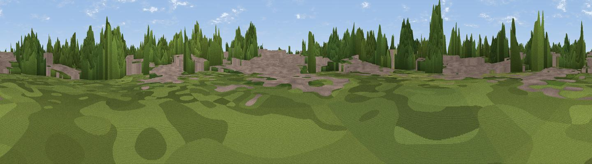

Marshall's Hill
#41648 in England · top 60% of its area beats it · near ShinfieldThe view, rendered

A 360° render of this exact spot computed from the terrain model, tree cover and land cover — summer colours, afternoon light, calibrated against photographs of famous viewpoints. Real trees, hedges and buildings will differ in detail.
The panorama
Grey silhouette: terrain skyline in each direction (720 bearings, Earth curvature and refraction included). Dashed green: skyline with trees (+15 m) and buildings (+8 m) as obstacles. Blue strip: how far the ground is visible on each bearing.
Where the view opens
Wedge length = distance to the farthest visible ground on that bearing (vegetation-aware). Rings at 10, 25 and 50 km.
What fills the view
47% woodland · 33% built-up · 14% grassland · 5% cropland
Angular shares of the visible panorama (visual magnitude), not map area. Landscape diversity 0.51 (0–1 Shannon).
Key numbers
More beautiful places nearby
The staircase of upgrades: each row has a higher view potential than everything closer. Driving times are estimates from straight-line distance, calibrated against real road routing — check an actual route before setting out.
| Place | Direction | Drive | Score |
|---|---|---|---|
| Viewpoint near Reading | WNW · 5 km | ~11 min | 36.9 |
| Viewpoint near Mapledurham | NW · 8 km | ~16 min | 44.6 |
| Viewpoint near Theale | WNW · 8 km | ~17 min | 48.1 |
| Viewpoint near Whitchurch-on-Thames | NW · 12 km | ~22 min | 55.0 |
| Viewpoint near Fawley | N · 18 km | ~31 min | 56.1 |
| Viewpoint near Streatley | WNW · 18 km | ~31 min | 56.7 |
| Viewpoint near Streatley | NW · 18 km | ~31 min | 57.3 |
| Fultness Wood Hill | NE · 19 km | ~32 min | 57.8 |
51.43013, -0.94606 · source: dobih hill · position refined by local search. Computed location — check access rights before visiting.